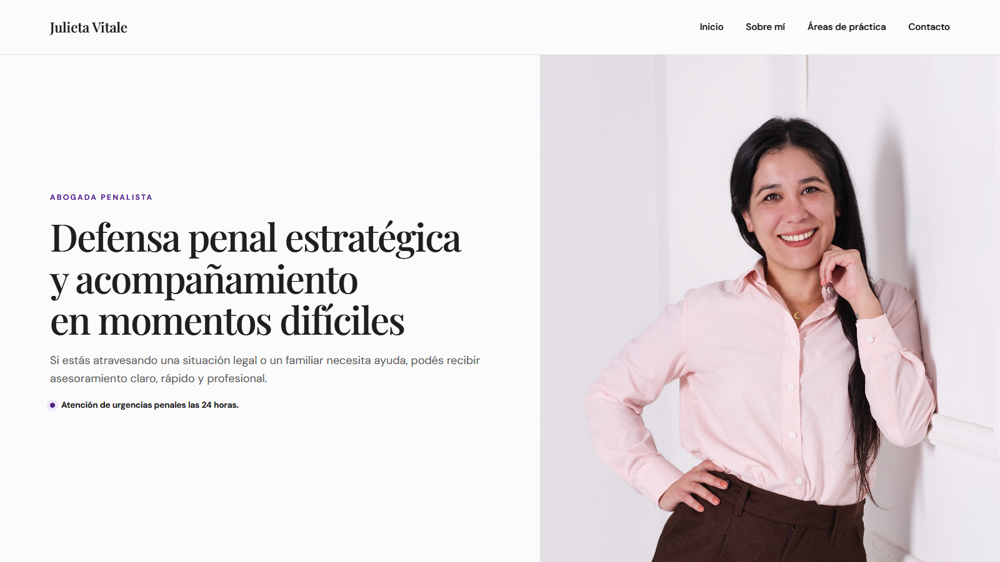
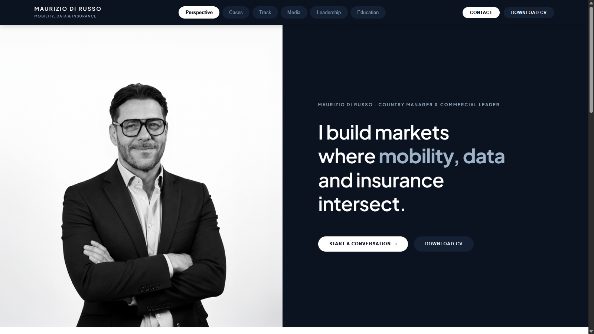

Guido Castellotti
Fotografía y diseño
Un sitio donde la fotografía organiza la experiencia y presenta una mirada propia.
Fotografía y diseño
Un sitio donde la fotografía organiza la experiencia y presenta una mirada propia.

Abogacía
Una presentación clara de su práctica penal, con información accesible y consulta directa.

Perfil profesional
Una presentación de su trayectoria, experiencia y trabajo con empresas.
Trabajo con profesionales y organizaciones para ordenar procesos, definir estrategias claras y estructurar etapas de transición y crecimiento profesional.
Un trabajo enfocado en la estructura, la autonomía de las personas y la toma de decisiones basada en criterios claros. Sin fórmulas prefabricadas ni complejidades innecesarias.
Acompañamiento a profesionales, estudios y equipos en la clarificación de proyectos y esquemas de trabajo sostenibles.
Coordinación de equipos interdisciplinarios, articulación institucional y diseño de metodologías de trabajo.
Diseño de talleres y espacios de formación técnica y metodológica para colectivos profesionales.
Tres modalidades principales de intervención según el momento y la necesidad del proyecto:
Definición de prioridades, ordenamiento de objetivos y diseño de rutas de acción realistas para profesionales y equipos.
Orientada a momentos donde se necesita poner orden, descartar caminos accesorios y acordar criterios comunes antes de iniciar una etapa de ejecución.
Sesiones regulares para evaluar avances, destrabar bloqueos y sostener el ritmo en momentos de transición o crecimiento.
Un espacio de trabajo periódico que funciona como interlocución crítica y soporte metodológico para mantener el foco en las prioridades.
Talleres y espacios de aprendizaje orientados a dotar a los equipos de herramientas metodológicas prácticas y aplicables.
Encuentros estructurados en torno a problemas concretos, orientados a que el equipo adquiera autonomía conceptual y práctica.
Ejemplos explícitamente ficticios que muestran cómo se presentan y documentan casos de trabajo:
Un estudio multidisciplinario que necesitaba ordenar sus flujos de trabajo internos y clarificar responsabilidades entre socios y colaboradores.
Diagnóstico cualitativo de procesos y diseño participativo de un esquema operativo simple y comprensible para todos los integrantes.
Estandarización de etapas de entrega, canales de comunicación unificados y reducción de fricciones cotidianas en la gestión.
Una organización profesional que requería fortalecer habilidades de gestión y facilitación en sus mandos medios.
Ciclo modular de seis encuentros prácticos con ejercicios aplicados a problemáticas reales y cotidianas del equipo.
Adopción de pautas comunes para reuniones de trabajo, delegación efectiva y documentación rigurosa de acuerdos.
Podemos empezar por tu recorrido, tus proyectos o esa idea que todavía estás ordenando.